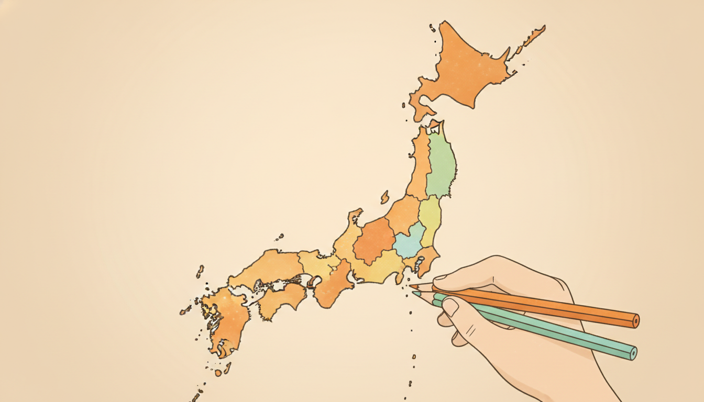

日本地図 色分けツール(都道府県・市区町村)
訪れた場所の記録や旅行の計画、自由研究の白地図などに使える、無料のオンライン色分けツールです。色を選んで地図をクリックするだけで塗り分けられ、PNG画像として保存もできます。インストール不要、登録も不要です。
日本地図1枚の中で、47都道府県を単位として塗り分けます。
地方を選ぶ→都道府県を選ぶと、その中の市区町村を1つずつ塗り分けられる詳細マップが開きます。